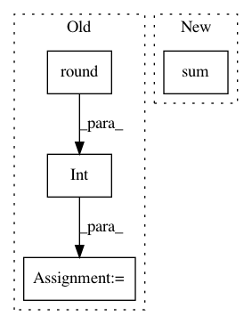

098f69b7c2282a556fc0b57d37b70328457de834,tmtoolkit/lda_utils/evaluation_lda.py,MultiprocEvaluationWorkerLDA,fit_model_using_params,#MultiprocEvaluationWorkerLDA#Any#,21
Before Change
if self.eval_metric == "cao_juan_2009":
results = metric_cao_juan_2009(lda_instance.topic_word_)
else: // default: loglikelihood
n_last_lls = max(int(round(EVALUATE_LAST_LOGLIK * len(lda_instance.loglikelihoods_))), 1)
if n_last_lls > 1:
results = np.mean(lda_instance.loglikelihoods_[-n_last_lls:])
else:
results = lda_instance.loglikelihoods_[-1]
After Change
elif self.eval_metric == "cao_juan_2009":
results = metric_cao_juan_2009(lda_instance.topic_word_)
elif self.eval_metric == "arun_2010":
results = metric_arun_2010(lda_instance.topic_word_, lda_instance.doc_topic_, self.data.sum(axis=1))
else: // default: loglikelihood
results = lda_instance.loglikelihoods_[-1]
In pattern: SUPERPATTERN
Frequency: 3
Non-data size: 4
Instances
Project Name: WZBSocialScienceCenter/tmtoolkit
Commit Name: 098f69b7c2282a556fc0b57d37b70328457de834
Time: 2017-10-11
Author: markus.konrad@wzb.eu
File Name: tmtoolkit/lda_utils/evaluation_lda.py
Class Name: MultiprocEvaluationWorkerLDA
Method Name: fit_model_using_params
Project Name: rusty1s/pytorch_geometric
Commit Name: 631d4ee2ece28da70d6e22201129f39b4f1dc586
Time: 2020-10-26
Author: matthias.fey@tu-dortmund.de
File Name: torch_geometric/data/temporal.py
Class Name: TemporalData
Method Name: train_val_test_split
Project Name: nilearn/nilearn
Commit Name: 585dc138010729fbbd65231170096bac5e3aa5ed
Time: 2017-02-17
Author: gael.varoquaux@normalesup.org
File Name: examples/05_advanced/plot_localizer_mass_univariate_methods.py
Class Name:
Method Name: